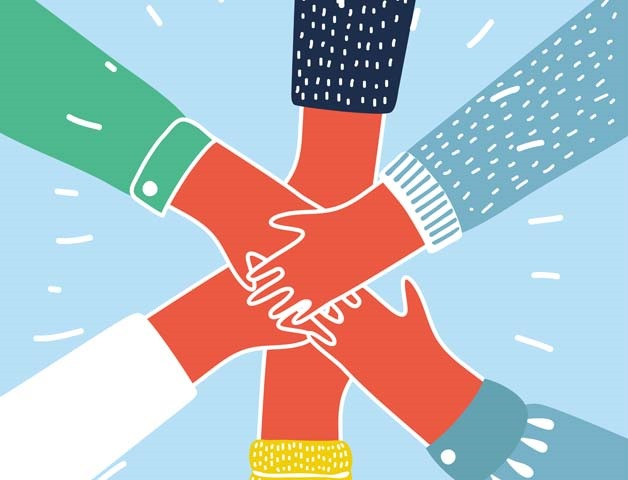

Soy estudiante de Ing. informática en la Universidad de Buenos aires. OJO! comenzando la carrera pues, antes estudiaba medicina.
Algo que me caracteriza es la pasión por la lectura, leer siempre será uno de mis mejores hobbies, siempre me lleva a aprender cosas nuevas!

Me gusta trabajar en equipo, sé bien que varias cabezas piensan mejor que una, tener una buena relación con todo el equipo de trabajo siempre será esencial para realizar un buen trabajo.